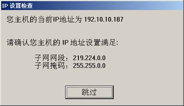
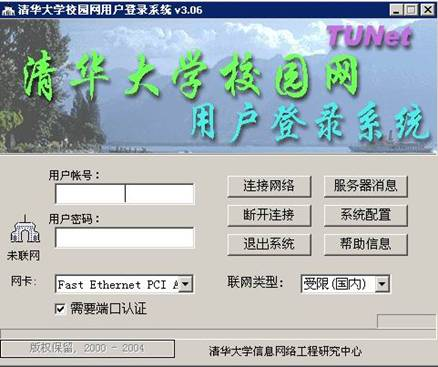
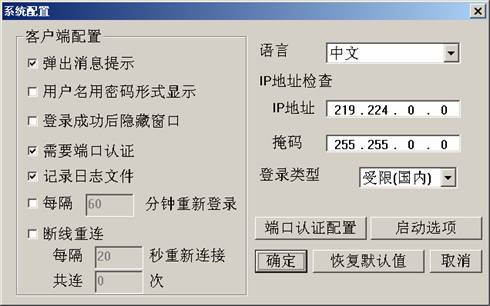
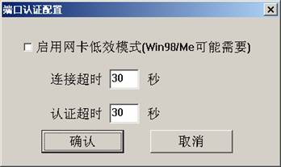
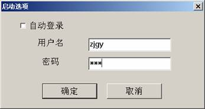

TUNet客户端（V3.06）简要使用说明
本系统在原有“清华大学网络安全登录系统”基础上增加了基于802.1x协议的端口认证功能，进一步增强了登录的安全性。目前该版本支持Windows98se、 Windows Me、Windows2000系列、WindowsXP及Windows2003操作系统。
1. 安装方法：
1、 首先，请用管理员身份登录。
2、 安装TUNet306.EXE文件。初次安装时，程序会自动安装winpcap3.0。并在“开始”－>“程序”中添加“清华大学校园网用户登录系统”。安装完毕需要重启系统。
3、 安装目录中有一个CloseWindot1x.exe程序，它用来关闭windows2000/XP自带的端口认证功能。本程序在安装过程中自动执行，一般不必单独手工执行。
4、 请通过https://usereg.tsinghua.edu.cn/ 界面把您要使用的IP地址的类型改为共享或独享，并至少需要一个连接数。
5、 初次使用时，如果是紫荆公寓的用户，可以在“系统配置”下“IP地址检查”中，查看默认IP地址“219.224.0.0”；如果不是紫荆公寓用户，请设为你本机机器IP地址的前两段。
2. 使用主界面：
1、 启动时会弹出界面：

2、 如果不正确，请选择“跳过”后，进入主界面后，直接参照4.1（系统配置）进行修改。
3、 在主界面（下图）中，从“网卡”列表框，选择需要认证的网卡。（如果你的系统安装了VMware软件，请不要选择Network Adapter VMnet*名称的网卡）。
4、 在登录类型列表框，可以选择：校内------校内登陆
受限------受限（国内）登陆
开放 ------开放（出国）登陆
5、 在“需要端口认证”复选框：选中时需要进行端口认证和TUNet认证，不选中只进行TUNet认证。

6、 输入用户名密码后点击“连接网络”进行联网操作。
7、 成功后显示如下：
若联网类型为“校内”，则任务栏中图标变为。
若联网类型为“受限”，则任务栏中图标变为。
若联网类型为“开放”，则任务栏中图标变为。
3. 服务器消息按钮：
点击该按钮后出现消息列表对话框，登录、退出过程中的消息将在这里显示，注意端口认证，TUNnet 认证通过后分别有不同的消息提示。消息可以存盘。
1、 主界面如下图。

在该界面中可以设置IP及掩码。“断线重连”或“每隔××分钟重新登录”功能打开后，如果在重连或重新登录过程中出现直到最后一次重试才能成功，请将重试间隔设长一点，因为时间间隔太小的话，会出现端口认证尚未通过时就进行下一次重试的现象。
早期版本的客户端中，“弹出欢迎消息”和“弹出服务器消息”两项在本客户端中已经合并为一个。
2、 “端口认证配置”按钮：
“启用网卡低效模式”：个别网卡无法收到交换机发来的包，请启用这个选项试试，Windows98/Me可能需要。
“连接超时”：如果时间间隔设得太小，会使端口认证无法通过。

3、 “启动选项”按钮：
程序启动时需要进行的配置，如下图。无论是否存有密码，此对话框初次弹出时密码一栏中为空。

自动启动时使用的登录类型为系统配置主界面中所选用的登录类型。
5. 其他注意事项
1、 在认证失败后，大约需要等待3－5秒，交换机才能接受下一次的认证请求。
2、 如果不能上网，请参照我们提供的FAQ进行检查，此FAQ也可在水木清华bbs站thunet版上获得。如果仍然不能上网，请致电84859或发信到 support@tsinghua.edu.cn。
3、 谢谢协助！